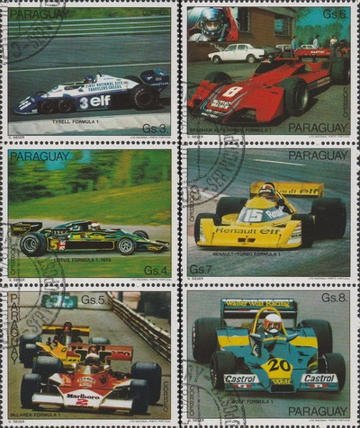
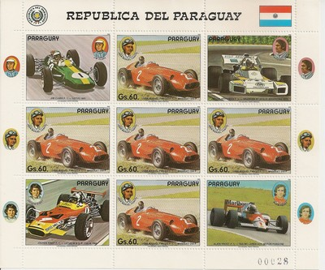

Paraguay
 |
 Issue date: 1989 A set of 5 stamps showing various F1 drivers and their cars. - Stirling Moss and Mercedes, Moss drove the Mercedes W196 in 1955. - Emerson Fittipaldi and Lotus, Fittipaldi drove for Lotus from 1970 to 1973, winning the F1 World Championship in 1972. - Nelosn Piquet and Lotus, Piquet drove for Lotus in 1988 and 1989. - Niki Lauda and Ferrari, Lauda drove for Ferrari from 1974 to 1977, winning the F1 World Championship in 1975 and 1977. - Juan Manuel Fangio and Maserati, Fangio drove for Maserati in 1953, 1954, 1957 and 1958, winning the F1 World Championship in 1954 and 1957.  Issue date: 1982 A set of seven stamps showing various F1 cars: Tyrell Lotus McLaren Brabham Renault Wolf In 1976 businessman Walter Wolf bought 60% of Frank Williams Racing Cars while agreeing to keep Frank Williams as manager of the team. Simultaneously he bought the assets of the Hesketh team that had recently withdrawn from F1. The team was based in the Williams facility at Reading but used most of the cars and equipment once owned by Hesketh Racing. The Hesketh 308C became known as the Wolf-Williams FW05 and soon afterwards Harvey Postlethwaite arrived as chief engineer. Jacky Ickx and Frenchman Michel Leclere were hired to drive. The team, however, was not very competitive and failed to qualify at a number of races during the year. Leclere left after the French Grand Prix and was replaced by Arturo Merzario, while Ickx failed to perform and was dropped after the British Grand Prix, to be followed by a string of pay-drivers. At the end of 1976, Wolf decided that the team needed restructuring. He removed Frank Williams from the manager's job and replaced him with Peter Warr from Team Lotus. Disillusioned, Williams soon left the team, taking Patrick Head and several others to set up Williams Grand Prix Engineering. Postlethwaite's WR1 was a conventional Cosworth package but with Jody Scheckter hired from Tyrrell, the new-look team presented a strong package. No-one, however, expected that the team would win its first race in Argentina. It was in many respects a lucky win with Scheckter starting tenth with six of the cars ahead of him retiring. During the 1977 season, Scheckter went on to win the Monaco Grand Prix and the Canadian Grand Prix and also six other podium finishes which enabled him to finish second to Niki Lauda in the World Championship and gave Wolf fourth place in the Constructors' Championship. The team remained the same for the 1978 season. Postlethwaite produced the WR5, a new car for the ground-effects era. This did not appear until the Belgian GP. Scheckter finished fourth in Spain and second in Germany but the WR5 soon made way for the WR6 with which he ended the year with a third in the US Grand Prix and second in Canada. He finished seventh in the World Championship. In 1979, Scheckter was signed up by Ferrari and Wolf signed James Hunt to replace him. Postlethwaite designed the WR7 which ran with Olympus sponsorship. The car was not very successful and retired more than 7 times during the first half of the season. The WR8 soon followed. In mid-season Hunt decided to retire and Wolf quickly hired Keke Rosberg to replace him. The appearance of the WR9 did little to change the team's fortunes and at the end of the year Wolf grew tired of his F1 adventure and sold the team to Emerson Fittipaldi, who merged its assets into Fittipaldi Automotive.  Issue date: 1982 A set of 7 stamps, showing 5 F1 cars from the 1982 season: Brabham BMW BT50 - this car was only used for part of 1982 season by Nelson Piquet and Ricardo Patrese. Renault RE30 B - driven by Alain Prost and Rene Arnoux - it was a formidable qualifying car, but failed to deliver the race results. Talbot-Ligier-Matra JS 19 - driven by Eddie Cheever and Jacques Laffite, it was an unreliable car. ATS Ford D 05- driven by Manfred Winkelhock and Eliseo Salazar, it was an unreliable car. Ferrari 126 C2 - driven by Gilles Villneuve, Patrick Tambay, Didier Pironi and Mario Andretti, this car gave Ferrari the constructors championship.  Issue date: 1989 A mini sheet of stamps and labels featuring the following cars and drivers: - Jim Clark - 19060 to 1968, Lotus - Carlos Reutemann - 1972 to 1982, Brabham, Ferrari, Lotus and Williams - Jochen Rindt - 1964 to 1970, Brabham, Cooper and Lotus - Alain Prost - 1980 to 1993, McLaren, Renault, Ferrari and Williams - Juan Manuel Fangio - 1950 to 1958, Alfa Romeo, Maserati, Daimler Benz and Ferrari - Brabham BT34 - Lotus 49 - Maserati 250F |